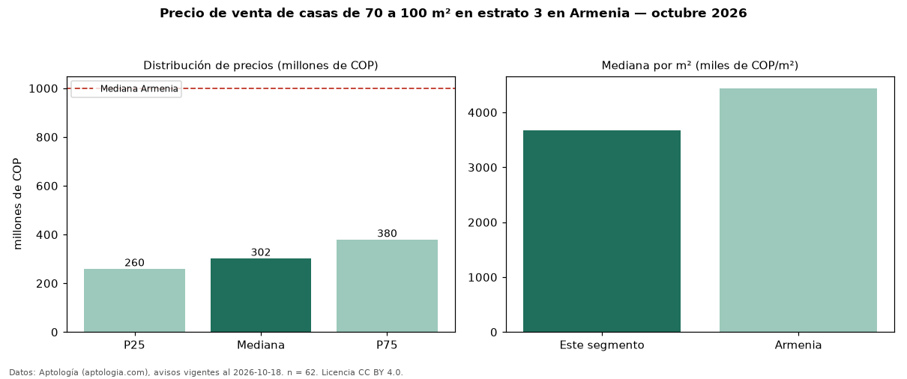

Precio de venta de casas de 70 a 100 m² en estrato 3 en Armenia — octubre 2026
Con 62 avisos vigentes, el precio mediano de casas de 70 a 100 m² en estrato 3 en venta en Armenia es COP 302 millones. Frente a la mediana de las casas en estrato 3 en venta de Armenia (COP 450 millones, n = 291), queda 33 % por debajo; este segmento reúne el 21 % de esos avisos. Por metro cuadrado, la mediana es COP 3,67 millones/m² (n = 62), 9 % por encima de las casas en estrato 3 en venta de Armenia (COP 3,36 millones/m²). El área mediana anunciada es 84 m². El segmento con más oferta es el de 3 o más habitaciones (58 avisos, mediana COP 329 millones). La mediana de todas las casas en venta de Armenia es COP 1,00 mil millones (−70 % de diferencia). 55 % de los avisos con el dato declara parqueadero. La mitad central de los avisos va de COP 260 millones a COP 380 millones (razón 1,5), una dispersión moderada. Datos: Aptología (aptologia.com), CC BY 4.0 — https://www.aptologia.com/venta/armenia. Archivos: PDF, CSV con las cifras y gráfica PNG.

| Avisos únicos | 62 |
|---|---|
| Percentil 25 | COP 260.000.000 |
| Mediana | COP 302.500.000 |
| Percentil 75 | COP 380.000.000 |
| Mediana por m² | COP 3.669.871 |
Fuente: avisos vigentes de portales inmobiliarios recopilados por Aptología, deduplicados (mínimo 30 avisos únicos por celda). Precios pedidos, no cerrados. Fecha: 2026-10-18.